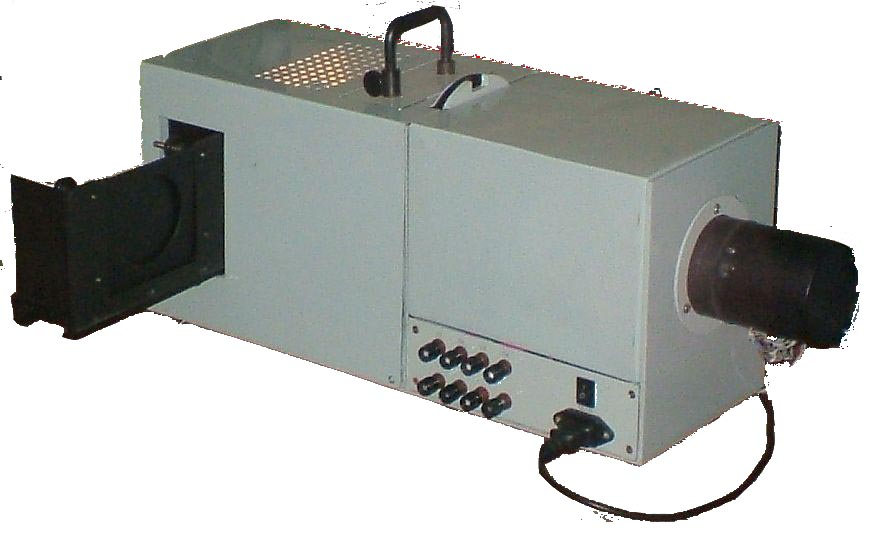

Статья о светоизмерительном стенде на базе колориметра , Журнал "МЕТРОЛОГІЯ ТА ПРИЛАДИ" • №6’2010
Колориметр КС08 определяет координаты цвета и цветности несамосветящихся и самосветящихся объектов;Колориметр предназначен для объективной оценки цвета и цветности.
Щёлкните по
фото для просмотра в крупном масштабе.:
На фото колориметр
измеряет цвет зеленого квадрата,
представленного на экране,
правее -
окно приложения колориметра с результатами измерения,
ниже - окно
локуса, на локусе - результат измерения в виде точки (щелкните по фотографии для просмотра в крупном
масштабе):
а не 3 (RGB)?
Телевизор,
оперирующий 3-мя цветами, не точно воспроизводит,
например, цвет морской волны (сине-зеленый) или
пурпурный.
4-канальные колориметры могут определять
более
широкий диапазон цветов.
Колориметр имеет 4 цветовых канала, каждый канал снабжен 8-диапазонным измерителем сигнала (обычные люксметры имеют 3 диапазона).
Колориметр пригодится на производствах, где необходимо воспроизвести или сличить цвет, яркость, контрастность, насыщенность объектов. Например, при окраске кож, тканей, при изготовлении лаков, красок, парфюмерии (лак для ногтей, помада), в фотолабораториях и типографиях, в пищевой промышленности (соки, кондитерские изделия), при изготовлении окрашенных растворов (химия, медицина), пластиков и т.д.
Колориметр
выполнен в виде единого устройства, подсоединяемого к USB компьютера,
питание - по USB от компьютера.
Габариты:
диаметр 15мм, длина 50мм.
Фототоки
от каналов колориметра поступают на канальные усилители с автоматически
переключаемыми диапазонами измерения.
Каждый
из 4-х усилителей-преобразователей может
работать в одном из 8-ми
диапазонов, диапазоны переключаются для каждого
из каналов индивидуально.
Коэффициенты усиления,
соответствующие диапазонам, составляют 800, 400, 200, 80, 40, 20, 4 и 1.
Колориметр
способен определять период
для периодических
сигналов
(освещение лампами, питающимися переменным
током, компьютерные мониторы и т.д.), что позволяет вычислять среднее
значение
периодических сигналов по целому числу периодов.
Это дает возможность существенно снизить
погрешность измерений, выполняемых колориметром, по сравнению с
погрешностью, получаемой при вычислении
среднего по случайному (нецелому) числу периодов.
С программным
обеспечением поставляется
библиотека, которую
пользователь может обновлять самостоятельно
(добавлять параметры новых эталонов, областей,
молочных стекол, образцов, локусов, вводя их
координаты).

Основная часть колориметра измерительная головка,
Фототоки
от 4-х фотодиодов измерителя,
каждый из которых
снабжен своим светофильтром, поступают на 4
усилителя с автоматически
переключаемыми диапазонами измерения.
Каждый
усилитель может работать в одном из 5-ти
диапазонов, диапазоны переключаются для каждого
из каналов индивидуально. Максимальные
измеряемые значения фототоков по диапазонам:
10нА, 100нА, 1мкА, 10мкА, 100мкА. Разрешение для
диапазона 10нА составляет 10пА.
Измерительная головка передает данные через СОМ-порт в компьютер, питается от сетевого адаптера, возможен вариант с работой и питанием через USB.
Для периодических сигналов
(освещение лампами, питающимися переменным
током, компьютерные мониторы и т.д.) определяется
период, что позволяет вычислять среднее значение
периодических сигналов по целому числу периодов.
Это дает возможность существенно снизить
погрешность измерений
по сравнению с
погрешностью, получаемой при вычислении
среднего по случайному (нецелому) числу периодов.
Компьютерное приложение обеспечивает порядка 20-ти режимов измерения и отображения информации.
В колориметре используются метрологические фотодиоды с большой площадью чувствительного элемента, соответственно, с высокой чувствительностью.
Вид окна приложения.